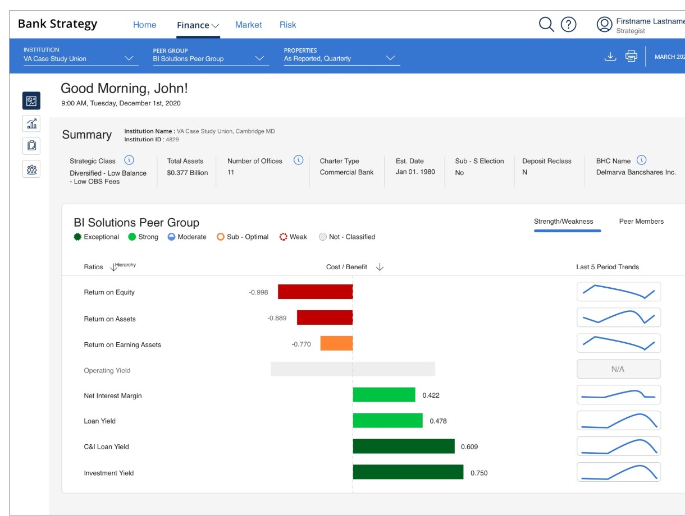
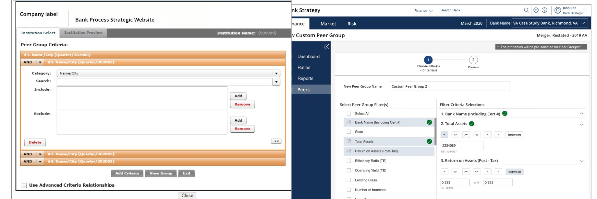
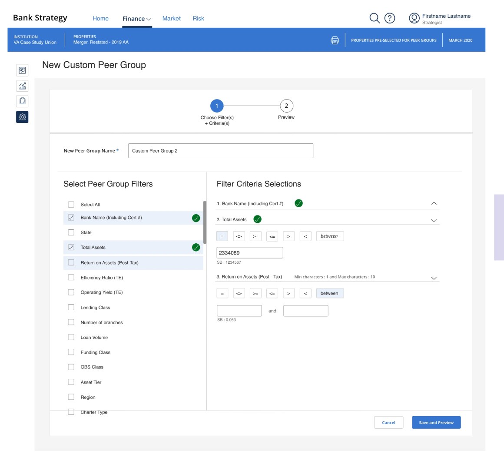

Fiserv Bank Analyst Portal
Directing the redesign of a legacy banking-analyst platform into a modern decision-support tool
Key Outcomes
- Directed the modernization of a legacy banking-analyst platform — replacing a fragmented, slow tool with an insight-driven workflow that enabled faster, more confident strategic recommendations to bank executives
- Made the strategic call to expand scope from a UI refresh into a decision-support architecture — built around how analysts actually think (peer benchmarking, growth-opportunity surfacing, institution-performance evaluation), not how the legacy data was structured
- Structured a hybrid delivery model with external design consultants alongside the internal UX team — using the engagement to raise the design quality bar inside Fiserv and demonstrate research-driven design in an engineering-first product domain
- Established data visualization and decision-support patterns as reusable craft IP — informing how Fiserv approached subsequent banking-product redesigns across the global services portfolio

THE BUSINESS STAKES
Banking Strategy Runs on the Quality of the Tool
Banking analysts at Fiserv's institutional clients use these portals to make decisions that move billions of dollars: where a bank should grow, which peer institutions to benchmark against, what product categories under- or over-perform their market segment. Strategic banking decisions are only as good as the data and tooling behind them — and the legacy platform was working against the analyst, not for them.
The platform was slow, the data fragmented across views that didn't talk to each other, and the workflow forced analysts to context-switch between tools to assemble the picture they needed. For a domain where the deliverable is a strategic recommendation to a bank's executive team, that friction had a real cost — in cycle time, in confidence, and in how Fiserv's clients perceived the value of the platform.
KEY DECISIONS & TRADEOFFS
From UI Refresh to Decision-Support Architecture
The project came to my team framed as a UI modernization — bring the visual language up to current standards, ship a cleaner version of the legacy tool. Early research with banking analysts told a different story. The interface wasn't the problem. The information architecture was. Analysts weren't asking for a prettier version of the same fragmented view; they were asking for a tool that supported the way they actually made decisions.
I made the call to expand the scope. Rather than re-skinning what existed, we'd redesign around the analyst's decision flow: institution performance evaluation, peer benchmarking, growth-opportunity surfacing — the three workflows that produced the strategic recommendation a bank's executive team would actually act on. That reframe changed the engagement and the deliverable.
It also changed the conversation with our product and engineering partners. Selling that scope expansion in a domain that historically equated UX with UI was the leadership work of the project — and one of the moments where the research practice we were building at Fiserv earned its keep.

APPROACH
Hybrid Delivery, Research-Led, Quality Bar Set Externally
I structured the engagement as a hybrid delivery: an external design consultancy with deep enterprise-data-viz craft alongside our internal UX team. That choice was deliberate. The internal team got to work alongside specialists at the top of the field for a quarter, raising the craft bar across our portfolio. The external partners got the domain context and stakeholder relationships they couldn't have built in time. The work got the quality and the velocity it needed.
On the research side, the approach was disciplined: stakeholder workshops with banking-product leadership to define decision criteria, contextual interviews with banking analysts at multiple client institutions, and end-to-end mapping of the advisory decision flow from raw data to executive recommendation. The artifact that came out of mapping — a single source of truth for how analysts actually moved through their day — became the architecture brief for the redesign.
My role through the project was to set direction, broker the partnership between internal and external teams, hold the quality bar across both, and protect the research-driven scope expansion from the recurring "can we just ship the UI refresh" pressure that surfaces in any enterprise-software org.
WHAT SHIPPED
A Decision-Support Platform, Not Another Dashboard
The redesigned platform consolidated previously fragmented data views into a single decision-support architecture organized around the three workflows that mattered: evaluate, benchmark, surface. Data visualization choices were treated as first-class design IP — not chart-library defaults, but deliberate patterns matched to the analyst's reasoning at each step (when to compare peers, when to dive into segment performance, when to summarize for an executive readout).
Decision-support interactions surfaced relevant context at the moment the analyst needed it instead of forcing a context-switch into another tool. Workflow shortcuts were built around the analyst's actual day, not the legacy data hierarchy. The output was a platform that fit how strategic banking work actually gets done.

Outcomes
Modernized decision-making workflows for banking analysts — enabling faster and more confident strategic recommendations to client institutions. Specific adoption metrics, satisfaction data, and screens are NDA-sensitive and available in conversation for serious opportunities.
IMPACT & OUTCOMES
What the Work Made Possible
The qualitative shift was the most important early signal: banking analysts could move through their decision flow without the constant context-switching that had been baked into the legacy experience. The conversation with banking-product leadership at Fiserv changed too — from "design polishes the engineering output" to "design shapes what we build" — which paid forward into subsequent product redesigns across the global services portfolio.
Directionally, analyst time-to-recommendation moved meaningfully — the routine briefings that had been a multi-tab, multi-tool exercise consolidated into a single interactive surface analysts actually wanted to demo to their managers. The most telling signal wasn't on a dashboard. It was that the banking-product team started asking us to look at adjacent workflows, which is the highest compliment a consulting engagement can earn on the inside of a partner organization.
RETROSPECTIVE
What I'd Do Differently
The consultant-to-internal handoff was where I'd invest the most. We did good work alongside the Fiserv banking team, but the moment of formal transition — from "the consultants own this" to "we own this" — happened later than it should have, which created a small period where ownership was ambiguous and momentum slowed. Next time I'd design the handoff as its own milestone, with named successors and a structured walkthrough of the system thinking, well before the work was finished. I'd also capture the data-visualization patterns we developed as reusable design-system contributions during the build, not after. Treating that IP as a first-class deliverable would have saved subsequent banking-product teams from re-deriving the same decisions.